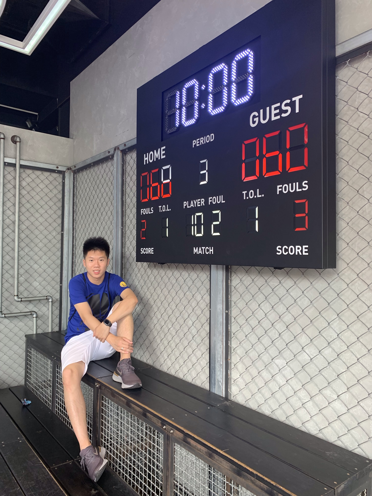
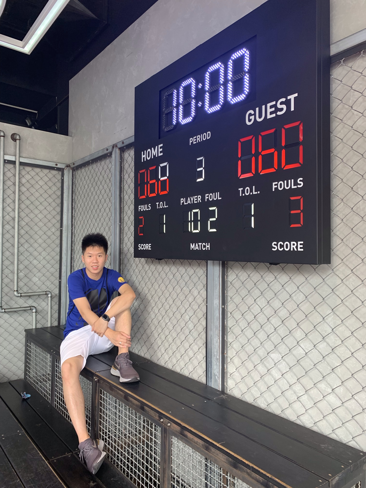

Hi! I'm Jason Chou
I am a current graduate student at the University of Michigan studying in the School of Information in Human-Computer Interaction and User Experience Design and Research. My goal as a designer is to discover the power of communication and sharing to better express people’s feelings while also open personal relationships between people.
While at UMSI, I have developed strong UX and analytical skills by taking rigorous course load. At the same time strengthening my collaboration and communication skills through participating CHI Student Game Competition.
Outside of the design world, I love to play basketball. In some ways, playing basketball is just like working in a team design project; they both require teamwork and communication. Playing basketball is like playing chess, you want to have a plan, prepare ahead of time, but also think quickly when things go sideways. At the same time, the players need to be in sync so that they can work together to perform the art of basketball. Playing basketball helps me to discover the importance of communication and teamwork. It also better prepared me to work in a team environment so that I am not afraid to speak up and share my opinions.
As a UX designer, I recognized communication has a big impact on our community. I am especially interested in how to collaborate with different designers from different countries and different cultures. I have experienced a language barrier personally and I realized that it is a huge problem that is standing in front of our community. I look forward to the opportunity to gain an internship to expand on my skills set in a design that is focusing on multicultural and language research.